เครื่องมือนับจำนวน amp ยาหยดต่อ 1 order สำหรับเภสัชกร พร้อมข้อความ Pharmacist note และคำเตือนขนาดยา
เปิดแอป: https://natthaphonyay-hub.github.io/drip-calculator/
ฉบับ 6 พฤศจิกายน 2569 (แอปเวอร์ชัน 1.11) ใช้ได้ทั้งมือถือและคอมพิวเตอร์ ไม่ต้องติดตั้ง ไม่ต้องสมัคร
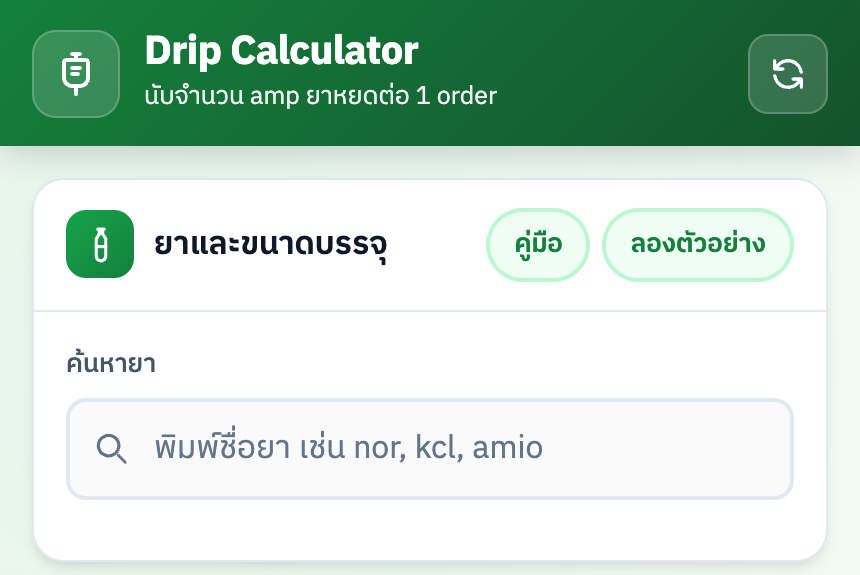
Norepinephrine, Adrenaline, Dopamine, Dobutamine, Vasopressin, KCl, MgSO4 (50% และ 10%), Calcium gluconate, NaHCO3, Heparin, Regular insulin, Nicardipine (2 ขนาด), NTG, Amiodarone, Morphine, Fentanyl, Midazolam, Propofol, Dexmedetomidine, Oxytocin
ทุกค่าตั้งต้นมีแหล่งอ้างอิง ค่าที่ยังไม่มีเอกสารยืนยันจะเป็นสีเทาพร้อมคำว่า "ยังไม่ยืนยัน"
ตัวอย่าง: Norepinephrine 4 mg/4 ml ผสม 8 mg ใน D5W 500 ml หยด 30 ml/hr นาน 24 ชม.
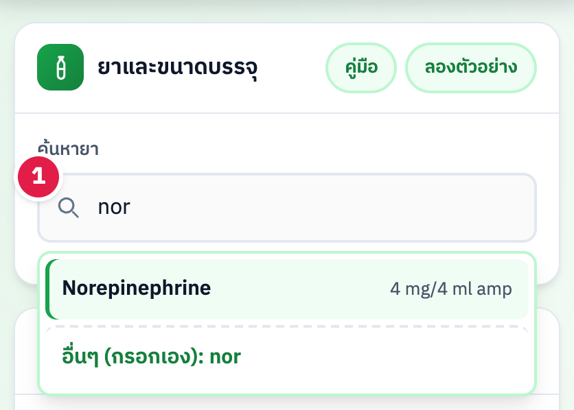
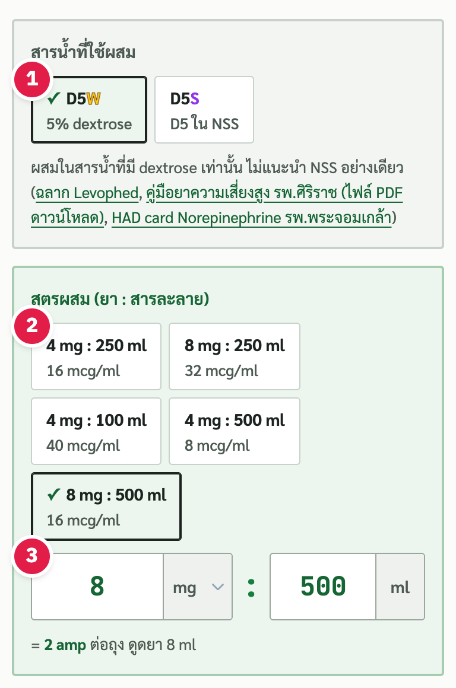
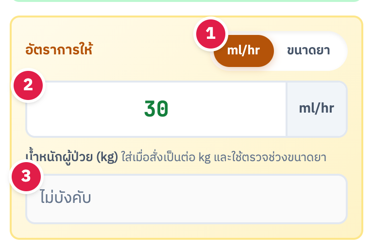
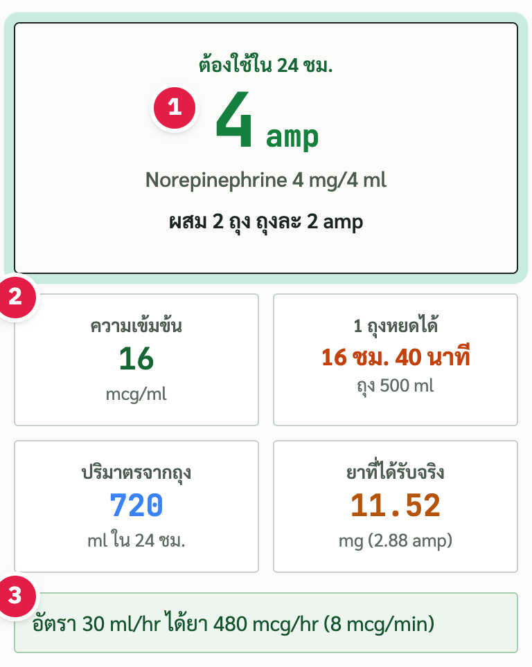
พิมพ์ชื่อสามัญ ชื่อการค้า หรือชื่อย่อก็ได้ เช่น nor, levophed, kcl, mgso4 แล้วแตะชื่อยา หรือกดลูกศรลงแล้ว Enter
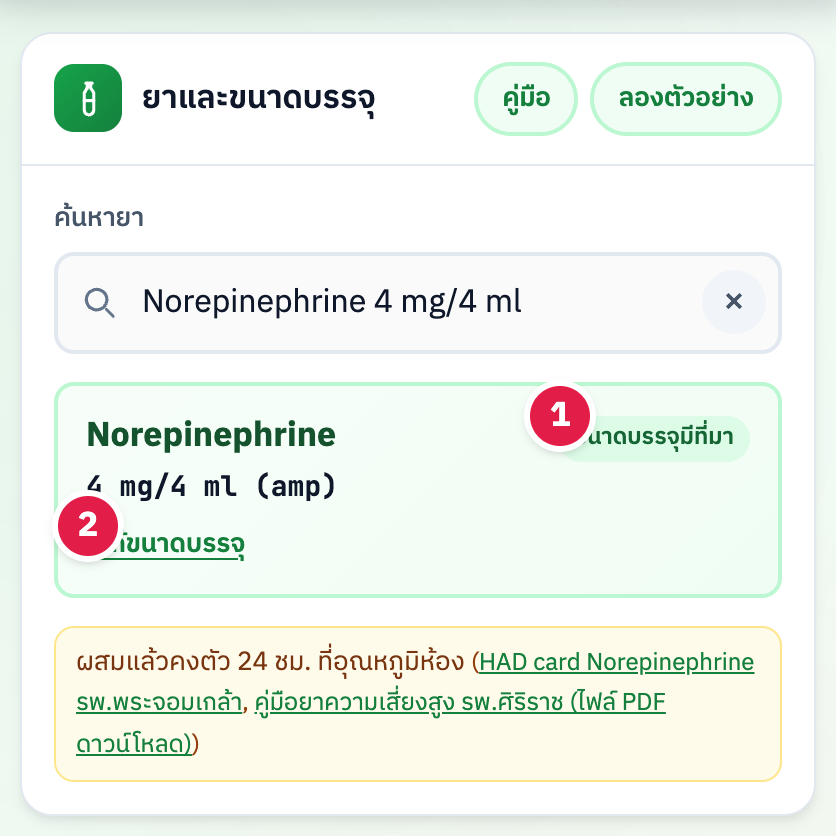
ถ้ายาของ รพ. ขนาดไม่ตรง แตะ "แก้ขนาดบรรจุ" แล้วแก้ยาต่อ 1 หลอด ปริมาตรต่อหลอด และชนิดบรรจุ (amp หรือ vial)
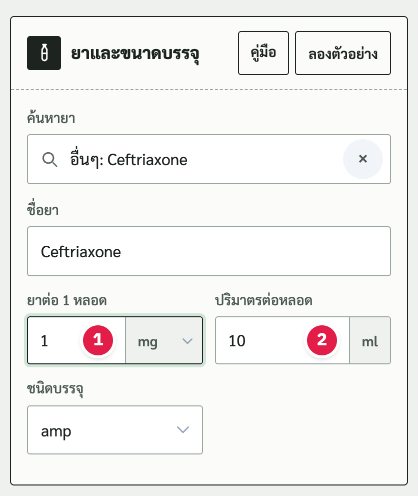
พิมพ์ชื่อยาแล้วแตะบรรทัด "อื่นๆ" ท้ายรายการ แล้วกรอก
แสดงเฉพาะสารน้ำที่ฉลากหรือ HAD ระบุว่าผสมได้ แตะเลือก 1 ตัว ใต้ปุ่มมีเหตุผลและลิงก์แหล่งอ้างอิง
สีบนปุ่มตรงกับขวดจริง: D5W ตัว W สีเหลือง, D5S ตัว S สีม่วง
แตะสูตรที่แพทย์สั่ง ตัวเลขบรรทัดล่างคือความเข้มข้นที่ได้
ถ้าไม่มีสูตรตรง แก้ตัวเลขในช่อง ยา : สารละลาย ได้เลย ช่องยาเลือกหน่วยได้ทั้งหน่วยยา (mg, mEq, unit) หรือเป็นจำนวนหลอด
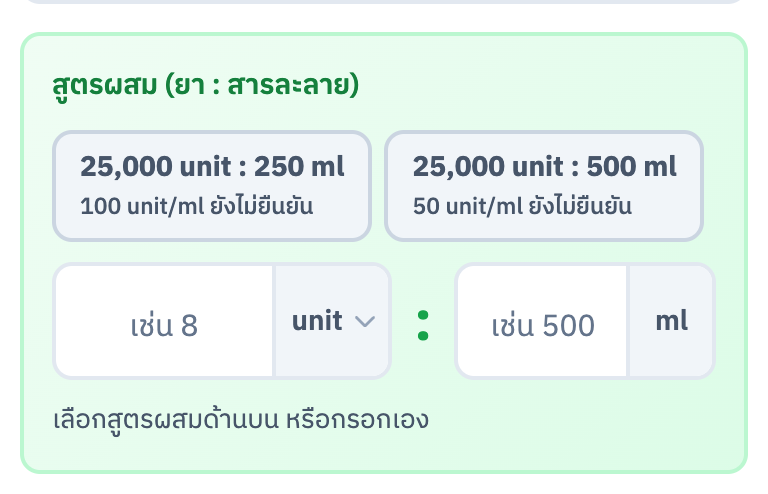
สูตรที่มาจากตารางทั่วไปและยังไม่มีเอกสารยืนยันจะเป็นปุ่มสีเทาพร้อมคำว่า "ยังไม่ยืนยัน" ใช้คำนวณได้ แต่ควรเทียบกับ HAD ของ รพ.
ml/hr เมื่อ order เขียนเป็นอัตราหยด หรือ ขนาดยา เมื่อ order เขียนเป็น mcg/kg/min, mg/hr, unit/hr ฯลฯ
ใส่ตัวเลขตาม order เช่น 30
ต้องใส่เมื่อสั่งเป็นต่อ kg และควรใส่ทุกครั้งที่รู้ เพราะใช้ตรวจขนาดยาเทียบช่วงที่แนะนำ
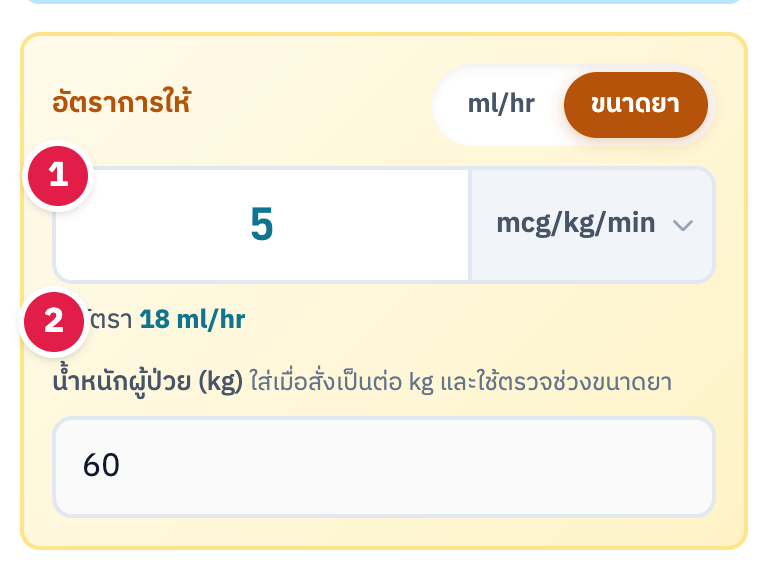
1ใส่ขนาดยาและเลือกหน่วยให้ตรง order เช่น Dopamine 5 mcg/kg/min น้ำหนัก 60 kg
2แอปแปลงเป็น ml/hr ให้ทันที ใช้ตั้งเครื่องหยดได้
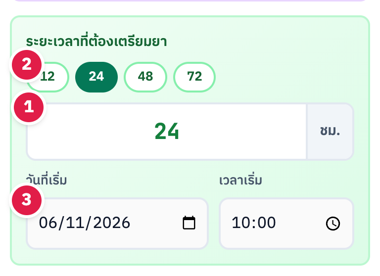
จำนวนชั่วโมงที่ต้องเตรียมยา ตั้งไว้ 24 ชม.
แตะ 12, 24, 48, 72 ชม. ได้เลย
ใส่เพื่อให้ตารางเปลี่ยนถุงและ note บอกเป็นวันที่และเวลาจริง
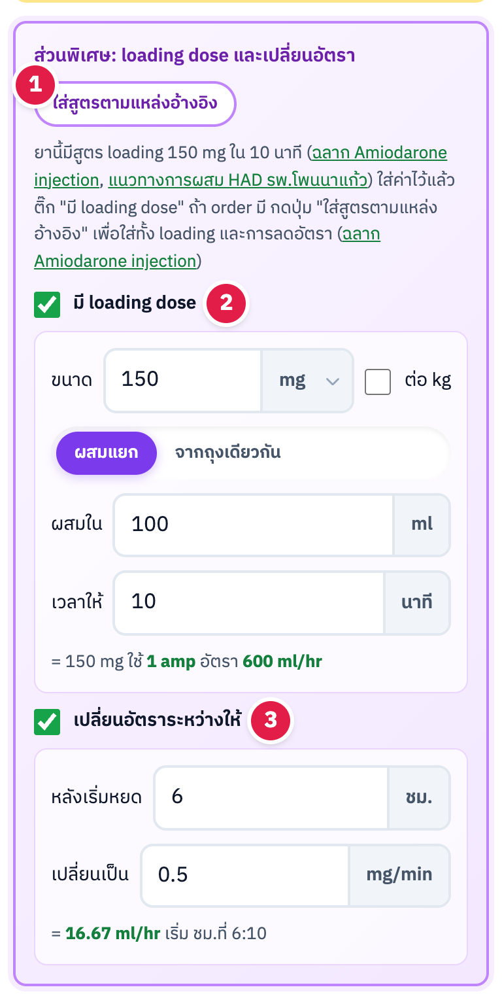
มีในยาที่มีสูตรมาตรฐาน เช่น Amiodarone กดครั้งเดียวได้ loading 150 mg ใน 10 นาที, 1 mg/min นาน 6 ชม. แล้วลดเป็น 0.5 mg/min
ติ๊กเมื่อ order มี loading แล้วกรอกขนาด (ติ๊ก "ต่อ kg" ถ้าสั่งเป็นต่อ kg) เลือกวิธีให้
ใส่ว่าหลังเริ่มหยดกี่ชั่วโมง และเปลี่ยนเป็นเท่าไร
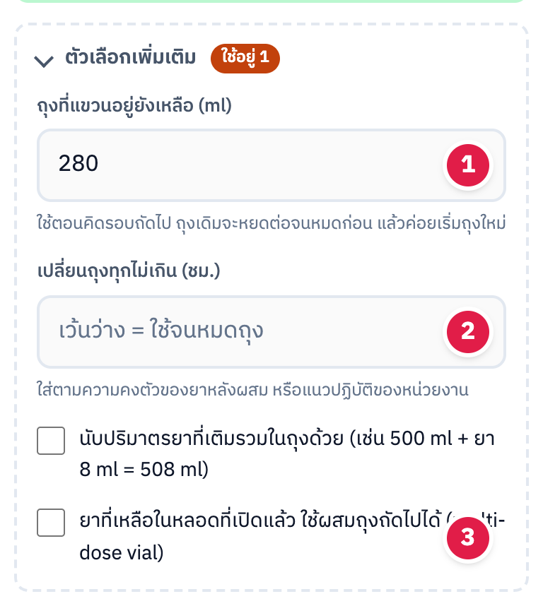
1ถุงที่แขวนอยู่ยังเหลือ ใช้ตอนคิดรอบถัดไป ถุงเดิมจะหยดต่อจนหมดก่อน แล้วค่อยเริ่มถุงใหม่
2เปลี่ยนถุงทุกไม่เกิน ใส่ตามความคงตัวของยาหลังผสม แอปจะทิ้งยาที่เหลือและเปิดถุงใหม่
3multi-dose vial ติ๊กเมื่อยาที่เหลือในหลอดใช้ผสมถุงถัดไปได้ เช่น insulin จะไม่ปัดหลอดขึ้นทุกถุง
ตัวเลขใหญ่คือ amp หรือ vial ทั้งหมดใน order บรรทัดล่างบอกว่าผสมกี่ถุง ถุงละกี่ amp
อัตรา ml/hr และขนาดยาที่ได้ในหน่วยที่ใช้บ่อย ไว้เทียบกับ order
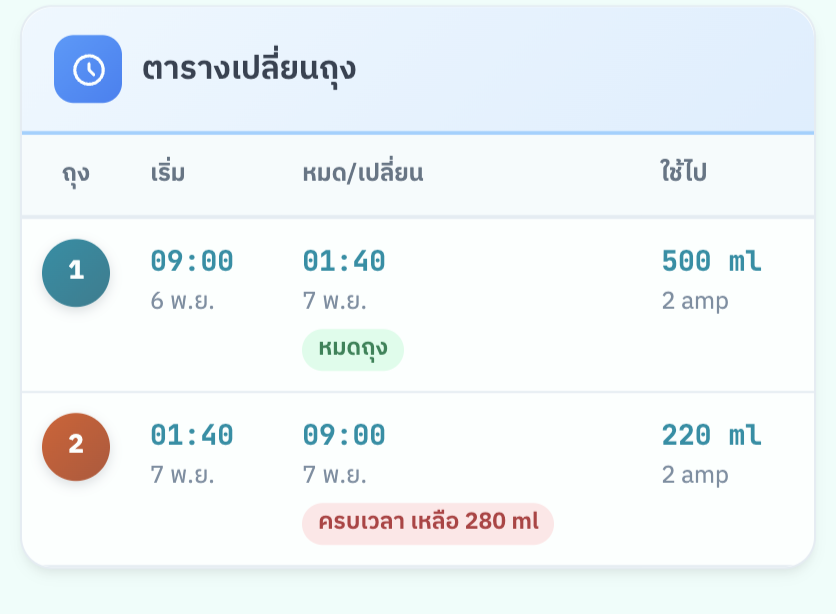
ถุงแต่ละถุงเริ่มและหมดเมื่อไร ป้ายบอกว่าหมดถุง ครบเวลาเปลี่ยนถุง หรือครบเวลา order แล้วยังเหลือเท่าไร
คำเตือนขึ้นเหนือจำนวน amp ทันทีที่ขนาดยา ความเร็ว ความเข้มข้น ยารวมต่อวัน หรือ loading ไม่อยู่ในช่วงที่ฉลากยาหรือ HAD ระบุ ทุกคำเตือนมีลิงก์ที่มา
| สี | ความหมาย | ตัวอย่าง |
|---|---|---|
| แดง | เกินค่าสูงสุดที่แหล่งอ้างอิงเขียนไว้ | Dopamine 60 mcg/kg/min (สูงสุด 50) |
| เหลือง | สูงกว่าที่แนะนำ หรือผิดเงื่อนไขที่ฉลากกำหนด | KCl 15 mEq/hr (แนะนำไม่เกิน 10) |
| ฟ้า | ต่ำกว่าที่แนะนำ อาจพิมพ์ผิด หรือขอข้อมูลเพิ่ม เช่นให้ใส่น้ำหนัก | Norepinephrine 0.267 mcg/min |
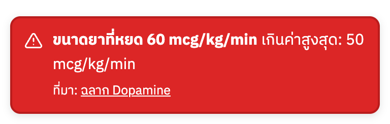
แดง: Dopamine 1:1 สั่ง 60 mcg/kg/min น้ำหนัก 60 kg
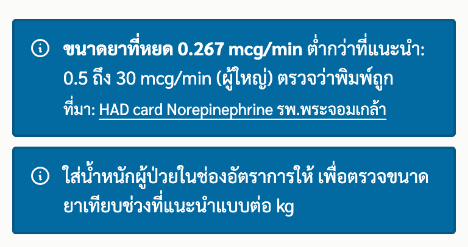
ฟ้า: Norepinephrine 4 mg : 250 ml หยด 1 ml/hr ไม่ใส่น้ำหนัก
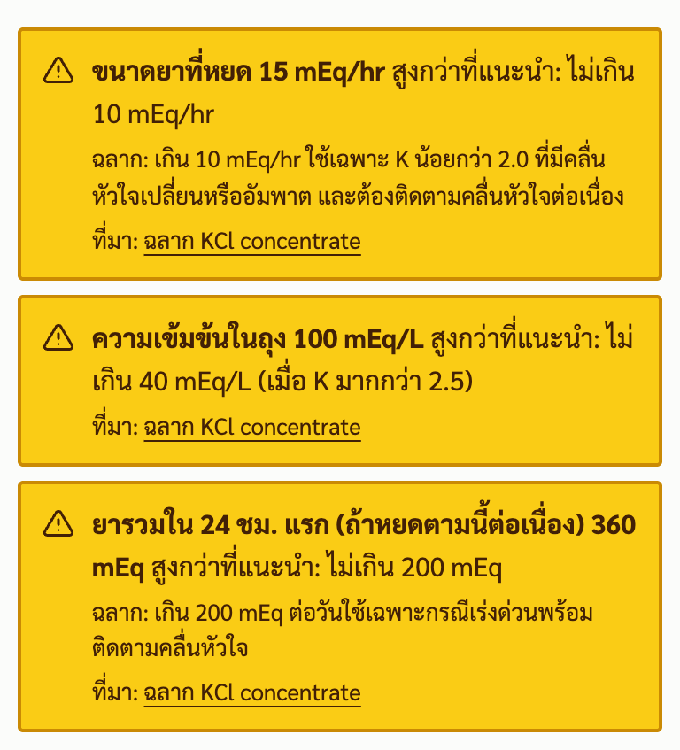
เหลือง: KCl 10 mEq : 100 ml หยด 150 ml/hr
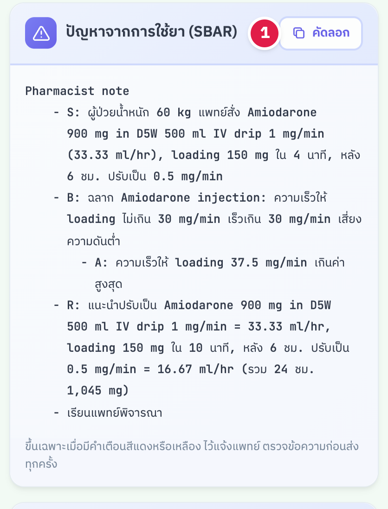
1กดคัดลอก แล้ววางในระบบหรือส่งแพทย์
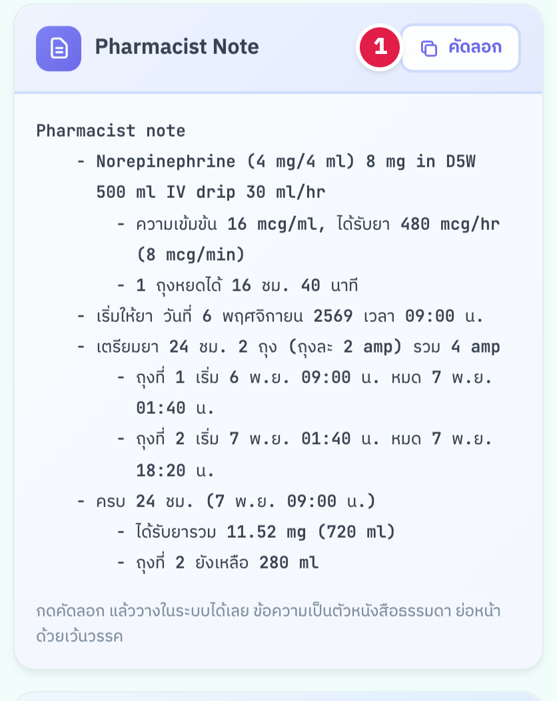
สรุป order วิธีผสม ความเข้มข้น ขนาดยาที่ได้ จำนวน amp ที่เตรียม เวลาเปลี่ยนถุง และยาที่ได้รับรวม
1กดคัดลอก แล้ววางในระบบที่ทุกสหวิชาชีพอ่านได้เลย
Norepinephrine 4 mg/4 ml ผสม 8 mg ใน D5W 500 ml หยด 30 ml/hr 24 ชม.
ผล: 4 amp (2 ถุง ถุงละ 2 amp) ครบ 24 ชม. ถุงที่ 2 เหลือ 280 ml
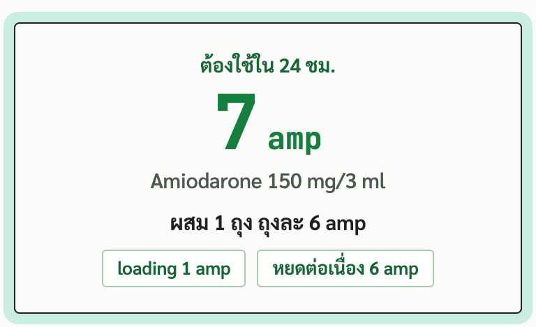
Amiodarone: เลือกยา แล้วกด "ใส่สูตรตามแหล่งอ้างอิง"
ผล: 7 amp แยกเป็น loading 1 amp และหยดต่อเนื่อง 6 amp
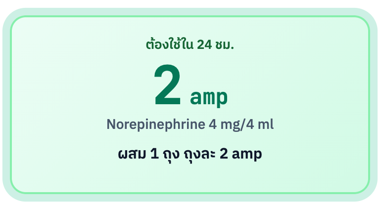
Norepinephrine สูตรเดิม หยด 30 ml/hr เปิดตัวเลือกเพิ่มเติม ใส่ถุงที่แขวนอยู่ยังเหลือ 280 ml
ผล: ถุงเดิมหยดต่อก่อน แล้วจึงเริ่มถุงใหม่ จำนวน amp รอบนี้ลดลงตามจริง
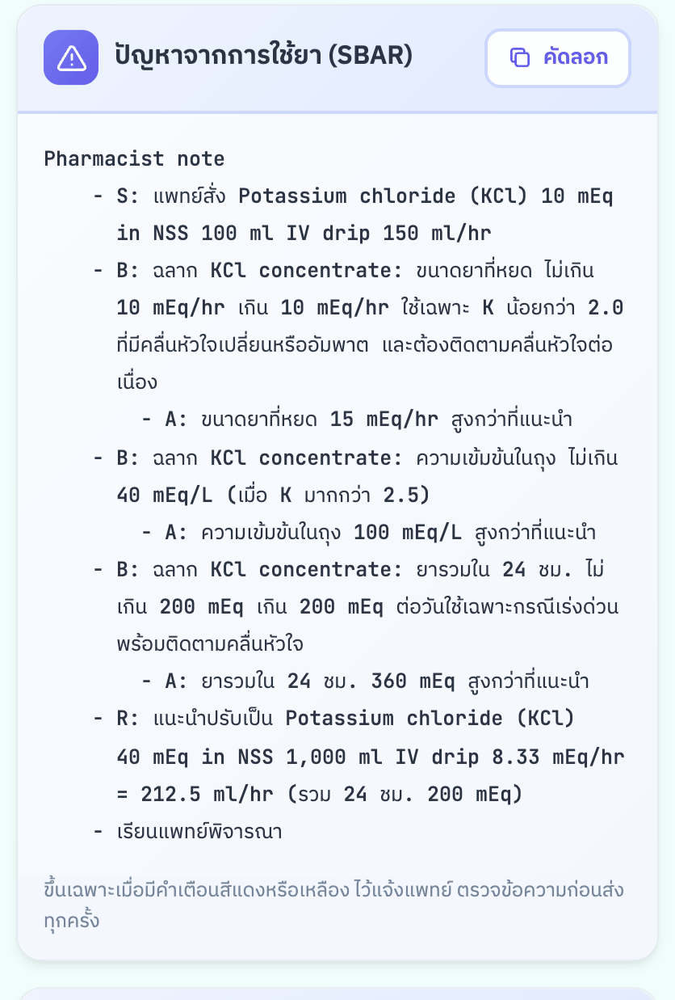
KCl ผสม 10 mEq ใน 100 ml หยด 150 ml/hr
ผล: คำเตือนเหลือง 3 ข้อ และ note SBAR แนะนำ KCl 40 mEq in NSS 1,000 ml หยด 8.33 mEq/hr = 212.5 ml/hr
พิมพ์ชื่อยา แตะ "อื่นๆ (กรอกเอง)" กรอกขนาดบรรจุ สูตรผสม และอัตรา แอปนับ amp ทำตารางและ note ให้เหมือนยาในรายการ